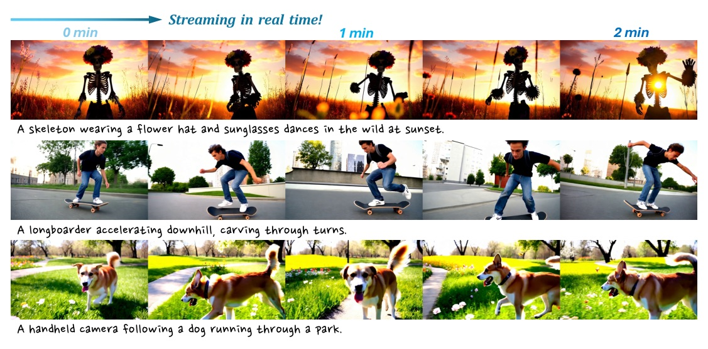
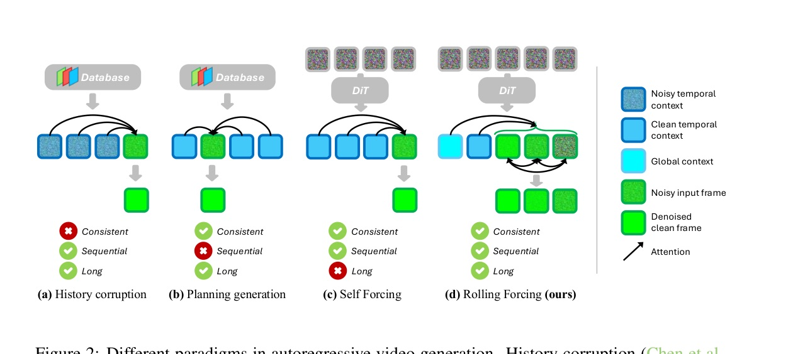
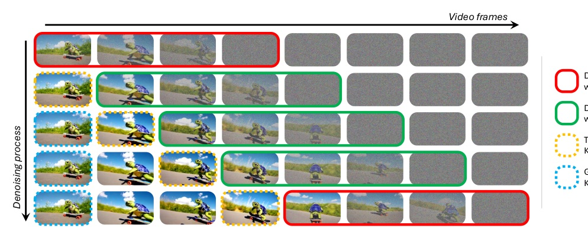
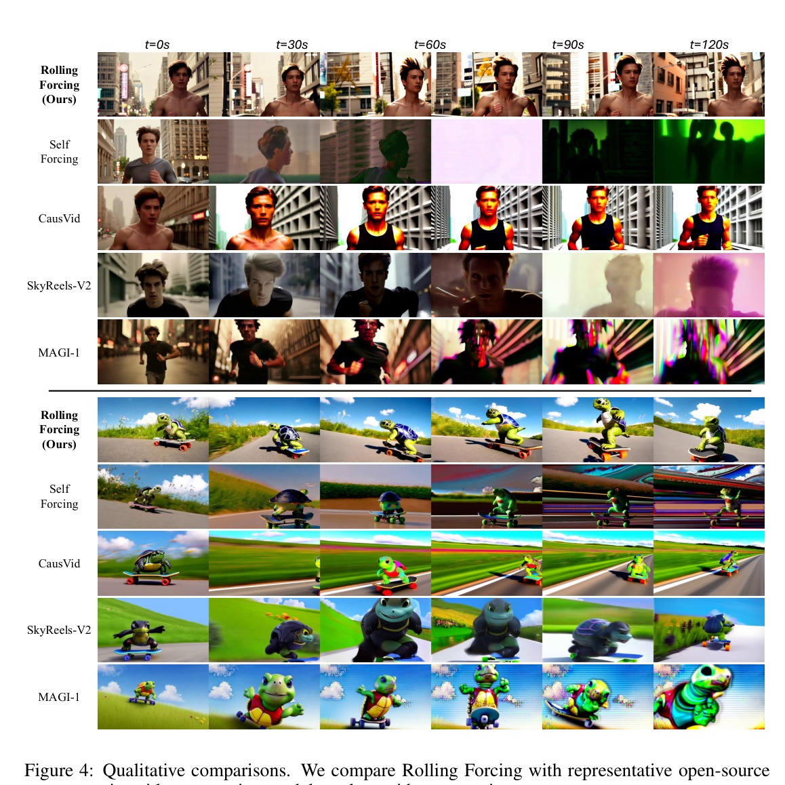
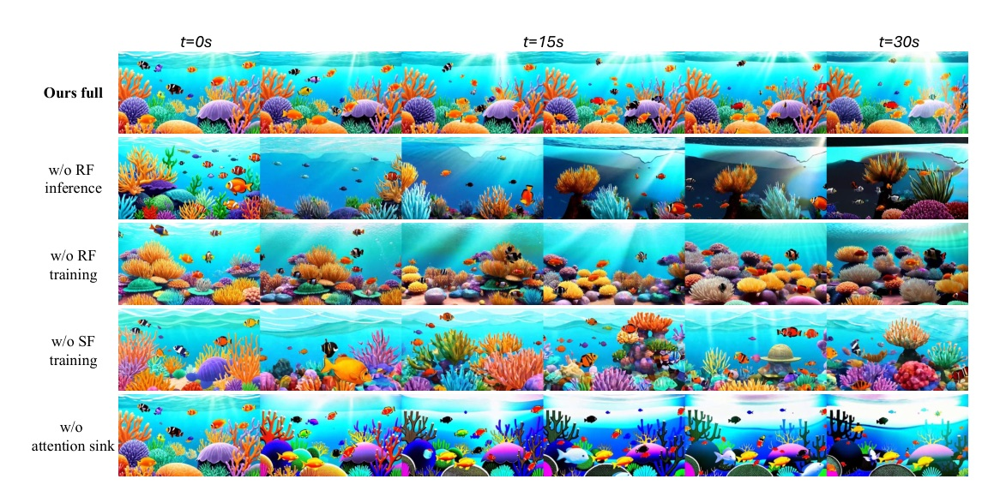
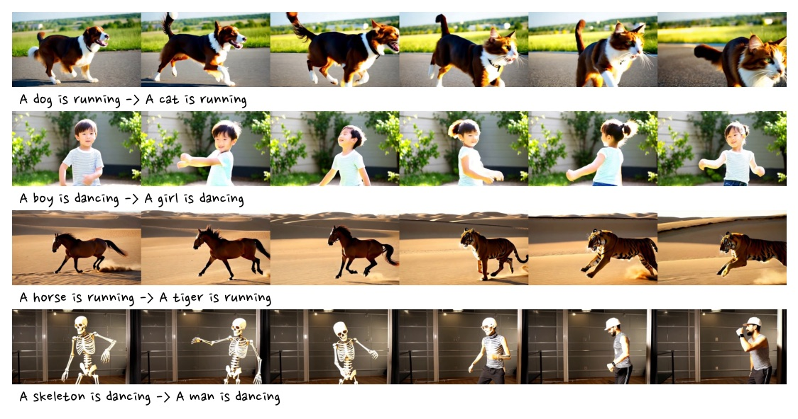
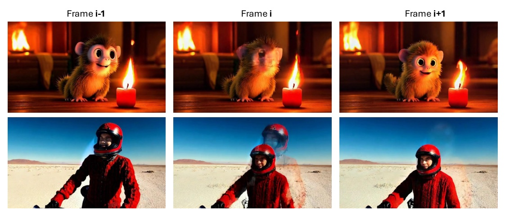

Venue：ICLR 2026 官方 virtual poster 頁（iclr.cc/virtual/2026/poster/10010326）與 mlanthology iclr/2026；arXiv v1 PDF 本身無 venue 頁尾 · Reviewer：OpenReview forum IAyzXjbfwo，JSON HTTP 403 未取得
Self Forcing 這類即時自回歸影片模型，一幀接一幀嚴格因果地生成，誤差會一路往下傳。Rolling Forcing 改成一次對 T 幀聯合去噪（噪聲逐幀遞增、窗內雙向注意力），再把開頭幾幀的 KV 當 attention sink 固定全域外觀，並用不重疊梯度窗做 DMD 蒸餾。Wan2.1-1.3B 上 30 秒畫質漂移 ΔDrift 1.66 → 0.01，仍維持 15.79 FPS / 0.76 s。

| 路線 | 代表 | 問題 |
|---|---|---|
| History corruption | Diffusion Forcing、SkyReels-V2 | 往 history 加噪 → 失去乾淨參考，時間一致性變差 |
| Planning generation | 先生遠處關鍵幀再補幀 | 破壞依序輸出，無法即時串流 |
| Distilled causal | CausVid、Self Forcing | 依序、一致，但誤差逐幀累積 |
與同期 StreamDiT / APT2 的差異：不改架構、只訓 3,000 步、不需要任何影片資料、只用 5 秒片段訓練就能推到數分鐘；基於開源 Wan2.1（§2, p.4）。

| Sink 索引放哪 | 現象（App. D） |
|---|---|
| 緊貼 temporal context 之前（採用） | 一致、偽影最少 |
| 固定 0:Lglo−1 | 強烈「跳回首幀」（Fig. 7） |
| 與 temporal context 重疊 | 閃爍：分不清 global / temporal |
| 放進去噪窗內 | 坍縮成靜態畫面 |
| 放在去噪窗之後 | 動作不自然，往錯位錨點收斂 |
| 項目 | 設定 |
|---|---|
| Base | Wan2.1-T2V-1.3B（5 s、16 FPS、832×480） |
| 初始化 | 因果 mask + 16k ODE solution pairs；prompt 取自過濾並經 LLM 擴寫的 VidProM |
| 去噪 | T = 5，schedule [1000, 800, 600, 400, 200]；flow matching，shift k = 5 |
| Chunk / 窗 | 每 chunk 3 latent frames；Lwin=15、Ltem=3、Lglo=3 |
| 訓練 | 3,000 steps、batch 8、N ∈ [21, 27] latent frames，DMD 算在最後 21 幀 |
| Optimizer | AdamW；generator lr 1.5e-6、fake score lr 4.0e-7；fake score 更新 5 次才更新 generator 1 次 |
選 5 步而非 4 步：作者表示即使 5 步，速度仍持平甚至略快於 4 步的 Self Forcing（App. A）。
| Model | FPS↑ | Lat(s)↓ | Subj | Back | Aes | Img | ΔDrift↓ |
|---|---|---|---|---|---|---|---|
| SkyReels-V2（DF） | 0.49† | 112† | 89.23 | 93.45 | 61.55 | 62.90 | 5.59 |
| MAGI-1（4.5B） | 0.19† | 282† | 90.86 | 93.25 | 59.91 | 59.87 | 2.15 |
| CausVid | 15.38 | 0.78 | 87.99 | 89.99 | 60.95 | 66.38 | 2.18 |
| Self Forcing | 15.38 | 0.78 | 86.48 | 90.29 | 60.54 | 68.68 | 1.66 |
| Rolling Forcing | 15.79 | 0.76 | 92.80 | 93.71 | 62.39 | 70.75 | 0.01 |
† 數字取自 Self Forcing 論文。Temporal flickering / Motion smoothness 未列：MAGI-1 在這兩項最高（98.21 / 99.20），RF 為 97.61 / 98.70。

漂移的根源是誤差只能往下游傳、無法回頭修。Rolling window 讓每一幀在定稿前，會在窗內不同位置被去噪 T 次、每次都和左右鄰居雙向對齊 —— 誤差在提交前就被鄰居互相校正。而色調、曝光這類「慢變量」沒有鄰居能救，只能靠一個相對位置固定的全域錨點（attention sink + dynamic RoPE）拉住。
證據：同一組權重只換成逐幀推論，ΔDrift 0.01 → 5.53；拿掉 sink，ΔDrift → 4.63、Subject 跌到 83.22。
| Variant | Temp | Subj | Back | Mot | Aes | Img | ΔDrift↓ |
|---|---|---|---|---|---|---|---|
| w/o RF inference | 95.45 | 86.01 | 89.94 | 97.36 | 57.59 | 65.19 | 5.53 |
| w/o RF training | 95.91 | 87.50 | 90.86 | 98.05 | 60.41 | 69.24 | 0.89 |
| w/o SF training | 90.83 | 83.27 | 88.14 | 95.63 | 55.30 | 62.00 | 1.62 |
| w/o attention sink | 97.53 | 83.22 | 87.99 | 98.56 | 58.99 | 67.30 | 4.63 |
| Ours full | 97.61 | 92.80 | 93.71 | 98.70 | 62.39 | 70.75 | 0.01 |

| Metric | CausVid | Self Forcing | Rolling Forcing |
|---|---|---|---|
| Quality Score | 80.89 | 81.39 | 84.08 |
| Subject Consistency | 89.50 | 88.61 | 94.80 |
| Imaging Quality | 65.30 | 68.98 | 72.31 |
| Dynamic Degree | 63.88 | 68.05 | 60.14 |
| Human Action | 81.00 | 83.00 | 73.00 |
| Semantic Score | 65.85 | 69.17 | 69.78 |

Within each window, frames are connected by bidirectional attention and assigned progressively increasing noise levels. Such mutual refinement corrects local errors before any frame is finalized, thereby suppressing long-horizon drift.
在每個窗內，幀之間以雙向注意力相連，並被指派逐幀遞增的噪聲等級。這種互相修正讓局部誤差在任何一幀定稿前就被校正，從而抑制長時間漂移。§1, p.2
We cache the key states of the global context frames before applying the RoPE transformation. During generation, we dynamically apply RoPE to these cached key states at the effective indices.
我們在套用 RoPE 之前快取 global context 幀的 key；生成時再於有效索引位置上動態套用 RoPE。§3.3, p.6
We sample a subset of non-overlapping windows to construct the predicted clean video. Gradient computation is performed only on these selected windows.
我們抽樣一組互不重疊的窗來拼出預測的乾淨影片，只在這些窗上計算梯度。§3.4, p.7
Frames generated in the middle are discarded once they leave the temporal context. As a result, the model retains no memory of mid-sequence content.
中段生成的幀一旦離開 temporal context 就被丟棄，因此模型對序列中段內容沒有任何記憶。App. E, p.16
推論（Alg. 2）相同流程但無梯度分支，每步只輸出 x̂i0；影片開頭窗還含第一幀時不使用任何 context（App. A）。

Rolling Forcing — Rolling Forcing: Autoregressive Long Video Diffusion in Real Time（ICLR 2026）· arXiv 2509.25161 · kunhao-liu.github.io/Rolling_Forcing_Webpage